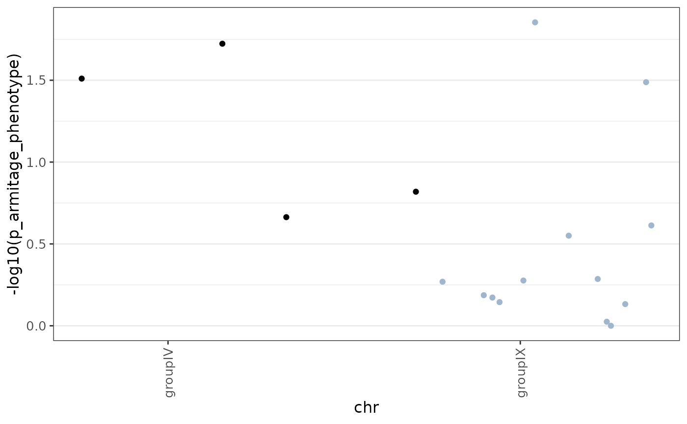
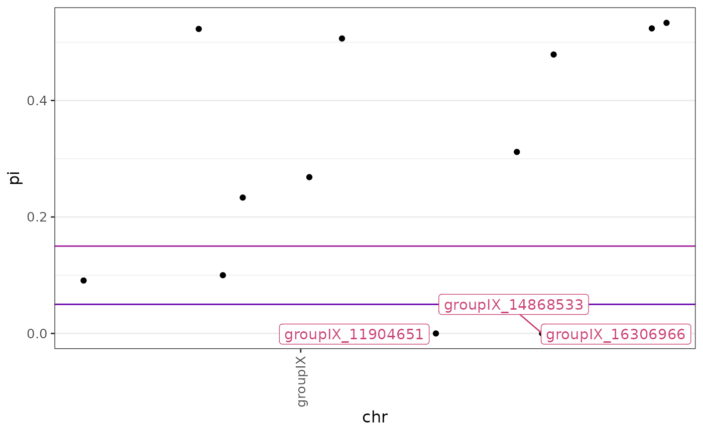
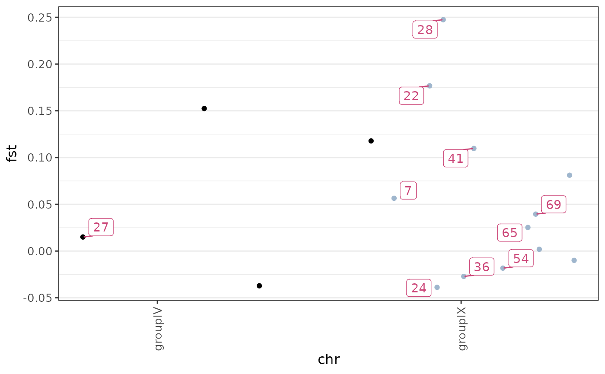
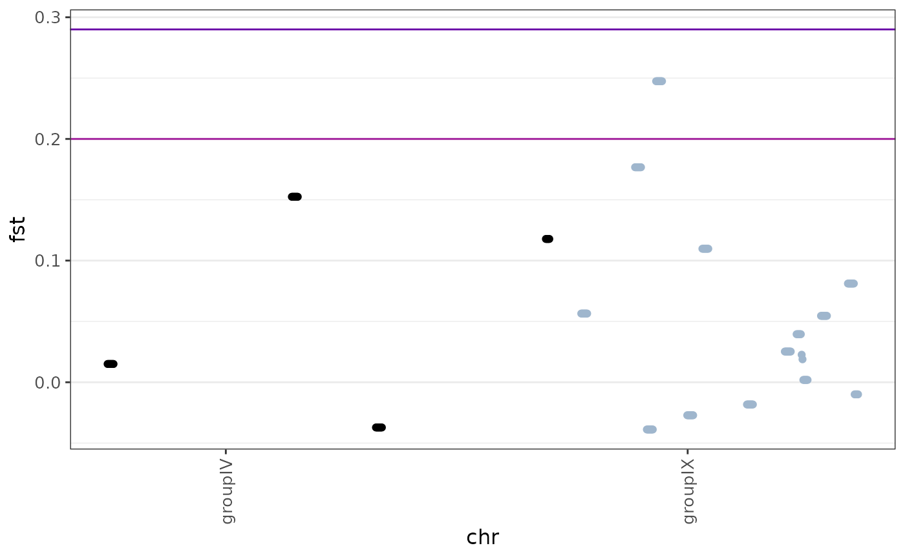
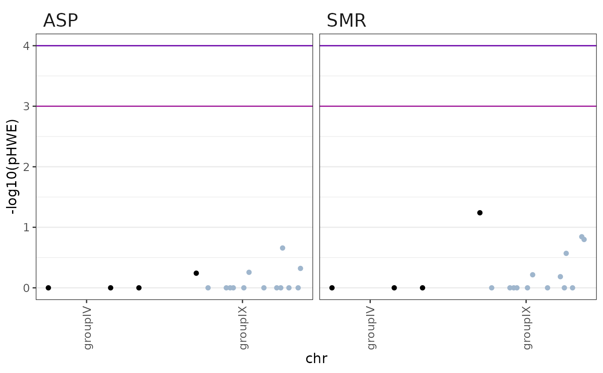
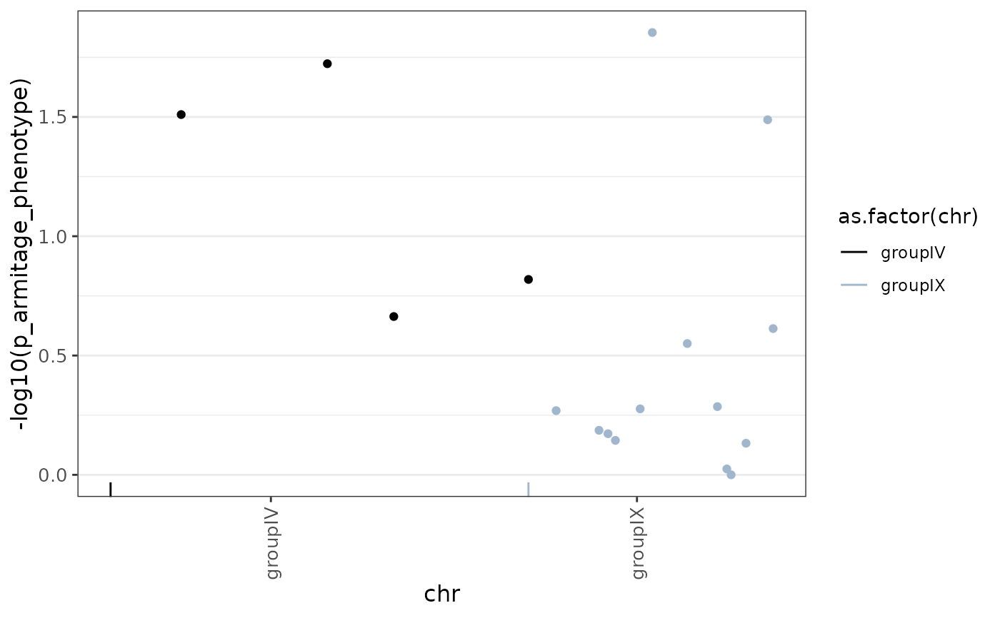
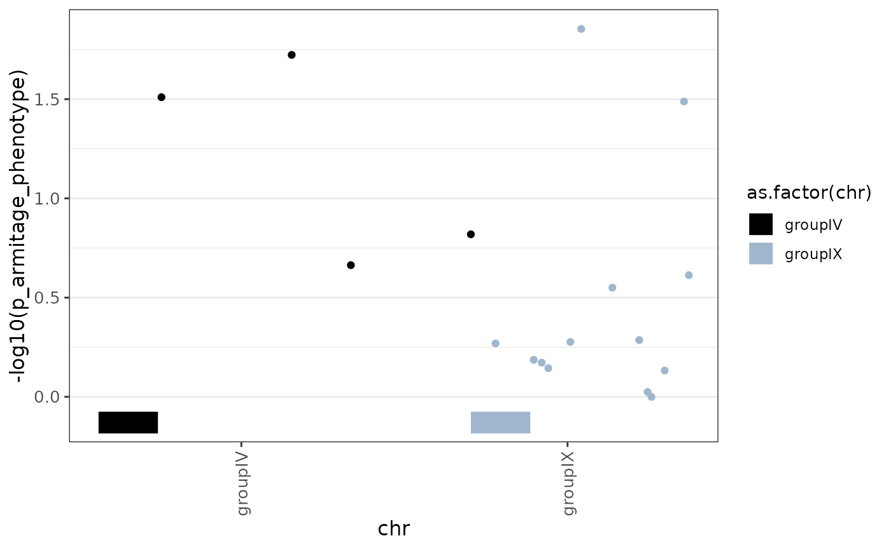

Generate a manhattan plot from snpRdata or a data.frame.
plot_manhattan.RdCreates a ggplot-based manhattan plot, where chromosomes/scaffolds/etc are concatenated along the x-axis. Can optionally highlight requested SNPs or those that pass an arbitrary significance threshold and facet plots by defined sample-specific variables such as population.
Usage
plot_manhattan(
x,
plot_var,
window = FALSE,
facets = NULL,
chr = "chr",
bp = "position",
snp = NULL,
color_var = NULL,
vlines = FALSE,
vline_width = 0.25,
median_line = FALSE,
chr.subfacet = NULL,
sample.subfacet = NULL,
significant = NULL,
suggestive = NULL,
highlight = "significant",
highlight_style = "label",
sig_below = FALSE,
log.p = FALSE,
abs = FALSE,
viridis.option = "plasma",
viridis.hue = c(0.2, 0.5),
t.sizes = c(16, 12, 10),
colors = c("black", "slategray3"),
rug_data = NULL,
rug_style = "point",
rug_label = NULL,
rug_alpha = 0.3,
rug_thickness = ifelse(rug_style == "point", 0.03, 6),
lambda_gc_correction = FALSE,
chr_order = NULL,
abbreviate_labels = FALSE,
simplify_output = FALSE
)Arguments
- x
snpRdata or data.frame object containing the data to be plotted.
- plot_var
character. A character string naming the statistic to be plotted. For snpRdata, these names correspond to any previously calculated statistics.
- window
logical, default FALSE. If TRUE, sliding window averages will instead be plotted. These averages must have first been calculated with calc_smoothed_averages. Ignored if x is a data.frame.
- facets
character or NULL, default NULL. Facets by which to break plots, as described in
Facets_in_snpR. For non-window stats, the any snp metadata facets will be ignored. Ignored if x is a data.frame.- chr
character, default "chr". Column in either snp metadata or x (for snpRdata or data.frame objects, respectively) which defines the "chromosome" by which SNP positions will be concatenated along the x-axis. If window = TRUE and a snpRdata object, this will be ignored in favor of the SNP specific facet provided to the facets argument.
- bp
character, default "bp". Column in either snp metadata or x (for snpRdata or data.frame objects, respectively) which defines the position in bp of each SNP.
- snp
character, default NULL. Column in either snp metadata or x (for snpRdata or data.frame objects, respectively) containing snpIDs to use for highlighting. Ignored if no highlighting is requested.
- color_var
character, default NULL. If provided, a column by which to color each point. If used, chromosomes will not be colored, and the
colorsargument instead provides a palette to use, with the viridis palette used by default.- vlines
character (color) or FALSE, default FALSE. If a color, vertical separator lines will be drawn between each chromosome. Widths controlled by
vline_width.- vline_width
numeric, default 2. Width of chromosome separator lines. Ignored if
vlinesis FALSE.- median_line
character (color) or FALSE, default FALSE. If TRUE, a horizontal line will be plotted at the
plot_varmedian in the color provided.- chr.subfacet
character, default NULL. Specific chromosomes to plot. See examples.
- sample.subfacet
character, default NULL. Specific sample-specific levels of the provided facet to plot. If x is a data.frame, this can refer to levels of a column titled "subfacet". See examples.
- significant
numeric, default NULL. Value at which a line will be drawn designating significant SNPs. If highlight = "significant", SNPs above this level will also be labeled.
- suggestive
numeric, default NULL. Value at which a line will be drawn designating suggestive SNPs. If highlight = "suggestive", SNPs above this level will also be labeled.
- highlight
character, numeric, or FALSE, default "significant". Controls SNP highlighting. If either "significant" or "suggestive", SNPs above those respective values will be highlighted. If a numeric vector, SNPs corresponding to vector entries will be highlighted. See details.
- highlight_style
character, default "label". Highlighting options:
label: labels with chr and position.
color: Color (word or hex) to color points by.
- sig_below
logical, default FALSE. If TRUE, treats values lower than the significance threshold as significant.
- log.p
logical, default FALSE. If TRUE, plot variables and thresholds will be transformed to -log.
- abs
logical, default FALSE. If TRUE, converts the plot variable to it's absolute value.
- viridis.option
character, default "plasma". Viridis color scale option to use for significance lines and SNP labels. See
scale_gradientfor details.- viridis.hue
numeric, default c(0.2, 0.5). Two values between 0 and 1 listing the hues at which to start and stop on the viridis palette defined by the viridis.option argument. Lower numbers are darker.
- t.sizes
numeric, default c(16, 12, 10). Text sizes, given as c(strip.title, axis, axis.ticks).
- colors
character, default c("black", "slategray3"). Colors to alternate across chromosomes.
- rug_data
data.frame or tbl, default NULL. Data to plot as a rug below the manhattan plot containing columns named to match the
chrargument and either thebpargument OR columns namedstartandendas well as, optionally, a column named to match therug_labelcolumn. Useful for labeling the locations of candidate genes, for example.- rug_style
character, default "point". Options for the style of the rug, ignored if
rug_datais not provided. Options:point: standard rug plot with vertical dashes below the plot at the indicated locations. If start and end points are supplied in
rug_data, the midpoint will be plotted.ribbon: Ribbons for each point drawn below the plot, from the
starttoendcolumns. If the plotted range ofxis very large (as in whole-genome or reduced representation sequencing), these may not be visible. A warning will be provided if this may be the case. Sub-setting the input and rug data to a range of interest may help in this case.
- rug_label
character, default NULL. Names of additional labeling columns in
rug_data, ignored ifrug_datais not provided. These will not be directly plotted (since the result is often very messy), but are available as aesthetics in the resulting plot, which can then be examined if something like theggplotlyfunction fromplotlyis used. This may change in the future if a clean plotting technique is suggested.- rug_alpha
numeric between 0 and 1, default 0.3. Alpha (transparency) applied to a ribbon-style rug. Ignored if
rug_datais not provided or therug_styleis notribbon.- rug_thickness
numeric, default .03 for point style and 6 for ribbon style. The height of the rug lines (if
rug_style = "point") or ribbon (ifrug_style = "ribbon"). Ignored ifrug_datais not provided.- lambda_gc_correction
Correct for inflated significance due to population and/or family structure using the \(\gamma_{GC}\) approach described in Price et al 2010.
- chr_order
character, default NULL. If provided, an ordered vector of chromosome/scaffold/etc names by which to sort output.
- abbreviate_labels
numeric or FALSE, default FALSE. If a numeric value, x-axis chromosome names will be abbreviated using
abbreviate, with each abbreviated label having the minimum length specified. Helpful when chromosome/scaffold/etc names are very long.- simplify_output
If TRUE, only the ggplot object will be return. This is optimal, since the data is already returned in that object, but is not the default due to backwards consistency with old code.
Value
A list containing
plot: A ggplot manhattan plot.
data: Raw plot data.
If simplify_output is FALSE, only the ggplot object is
returned.
Details
Unlike most snpR functions, this function works with either a snpRdata object
or a data.frame. For snpRdata objects snp-specific or sliding window
statistics can be plotted. In both cases, the facet argument can be used to
define facets to plot, as described in Facets_in_snpR. For
typical stats, name of the snp meta-data column containing
chromosome/scaffold information must be supplied to the "chr" argument. For
windowed stats, chr is instead inferred from the snp-specific facet used to
create the smoothed windows. In both cases, the requested facets must exactly
match those used to calculate statistics! If x is a data frame, the "chr"
argument must also be given, and the "facets" argument will be ignored.
A column defining the position of the SNP within the chromosome must be provided, and is "position" by default.
Specific snp and chr levels can also be requested using the chr.subfacet and sample.subfacet arguments. See examples. For data.frames, sample.subfacets levels must refer to a column in x titled "subfacet".
Specific snps can be highlighted and annotated. If a significance level is requested, SNPs above this level will be highlighted by default. SNPs above the suggestive line can also be highlighted by providing "suggestive" to the highlight argument. Alternatively, individual SNPs can be highlighted by providing a numeric vector. For snpR data, this will correspond to the SNP's row in the snpRdata object. For data.frames, it will correspond to a ".snp.id" column if it exists, and the row number if not. The label for highlighted SNPs will be either chr_bp by default or given in the column named by the "snp" argument.
References
Price, A., Zaitlen, N., Reich, D. et al. New approaches to population stratification in genome-wide association studies. Nat Rev Genet 11, 459–463 (2010). https://doi.org/10.1038/nrg2813
Examples
# add a dummy phenotype and run an association test.
x <- stickSNPs[pop = c("ASP", "SMR"), chr = c("groupIX", "groupIV")]
sample.meta(x)$phenotype <- sample(c("A", "B"), nsamps(x), TRUE)
#> Warning: Some levels are duplicated across multiple sample meta facets.
#> This will cause issues if those sample facets are run during analysis.
#> Issues:
#>
#> Level: A in facets: fam, phenotype
#> Level: B in facets: fam, phenotype
x <- calc_association(x, response = "phenotype", method = "armitage")
plot_manhattan(x, "p_armitage_phenotype", chr = "chr",
log.p = TRUE)$plot

# other types of stats:
# make some data
x <- calc_basic_snp_stats(x, "pop.chr", sigma = 200, step = 50)
# plot pi, breaking apart by population, keeping only the groupIX
# and the ASP population, with
# significant and suggestive lines plotted and SNPs
# with pi below the significance level labeled.
plot_manhattan(x, "pi", facets = "pop",
chr = "chr", chr.subfacet = "groupIX",
sample.subfacet = "ASP",
significant = 0.05, suggestive = 0.15, sig_below = TRUE)$plot

# plot FST for the ASP/SMR comparison across all chromosomes,
# labeling the first 10 SNPs in x (by row) with their ID
# Note that since this is thie ony comparison, we don't actually need to
# specify it.
plot_manhattan(x, "fst", facets = "pop.chr",
sample.subfacet = "ASP~SMR", highlight = 1:10,
chr = "chr", snp = ".snp.id")$plot

# plot sliding-window FST between ASP and SMR
# and between OPL and SMR
plot_manhattan(x, "fst", window = TRUE, facets = c("pop.chr"),
chr = "chr", sample.subfacet = "ASP~SMR",
significant = .29, suggestive = .2)$plot

# plot using a data.frame,
# using log-transformed p-values
## grab data
y <- get.snpR.stats(x, "pop", stats = "hwe")$single
## plot
plot_manhattan(y, "pHWE", facets = "subfacet", chr = "chr",
significant = 0.0001, suggestive = 0.001,
log.p = TRUE, highlight = FALSE)$plot

# plot with a rug
rug_data <- data.frame(chr = c("groupIX", "groupIV"), start = c(0, 1000000),
end = c(5000000, 6000000), gene = c("A", "B"))
# point style, midpoints plotted
plot_manhattan(x, "p_armitage_phenotype", chr = "chr",
log.p = TRUE, rug_data = rug_data)
#> $plot

#>
#> $data
#> facet subfacet chr position .snp.id pvar pi pHWE pHWE_overall_BY
#> 1 .base .base groupIX 2075079 7 0.26906040 NA NA NA
#> 2 .base .base groupIX 5287711 22 0.18662243 NA NA NA
#> 3 .base .base groupIX 5960933 24 0.17233884 NA NA NA
#> 4 .base .base groupIV 6291287 27 1.51000999 NA NA NA
#> 5 .base .base groupIX 6515796 28 0.14438394 NA NA NA
#> 6 .base .base groupIX 8373442 36 0.27642285 NA NA NA
#> 7 .base .base groupIX 9284427 41 1.85382408 NA NA NA
#> 8 .base .base groupIX 11904651 54 0.55028383 NA NA NA
#> 9 .base .base groupIX 14164215 65 0.28587317 NA NA NA
#> 10 .base .base groupIX 14868533 69 0.02463373 NA NA NA
#> 11 .base .base groupIX 15190693 70 0.00000000 NA NA NA
#> 12 .base .base groupIX 16306966 78 0.13233090 NA NA NA
#> 13 .base .base groupIV 17248473 83 1.72316940 NA NA NA
#> 14 .base .base groupIX 17929225 87 1.48814195 NA NA NA
#> 15 .base .base groupIX 18339767 88 0.61296763 NA NA NA
#> 16 .base .base groupIV 22227311 96 0.66349468 NA NA NA
#> 17 .base .base groupIV 32321895 100 0.81893506 NA NA NA
#> pHWE_byfacet_BY ho he maf maj.count major min.count minor fis
#> 1 NA NA NA 0.14062500 55 T 9 G NA
#> 2 NA NA NA 0.24137931 44 C 14 T NA
#> 3 NA NA NA 0.05172414 55 A 3 G NA
#> 4 NA NA NA 0.11666667 53 A 7 C NA
#> 5 NA NA NA 0.41071429 33 T 23 C NA
#> 6 NA NA NA 0.17187500 53 A 11 G NA
#> 7 NA NA NA 0.42857143 32 G 24 A NA
#> 8 NA NA NA 0.01470588 67 G 1 T NA
#> 9 NA NA NA 0.28787879 47 C 19 T NA
#> 10 NA NA NA 0.06451613 58 A 4 G NA
#> 11 NA NA NA 0.28125000 46 A 18 C NA
#> 12 NA NA NA 0.07812500 59 G 5 T NA
#> 13 NA NA NA 0.07142857 65 T 5 A NA
#> 14 NA NA NA 0.34848485 43 T 23 C NA
#> 15 NA NA NA 0.43750000 27 A 21 G NA
#> 16 NA NA NA 0.08064516 57 C 5 A NA
#> 17 NA NA NA 0.41666667 35 A 25 T NA
#> pa_corrected g start cum.bp
#> 1 NA NA 32321895 34396974
#> 2 NA NA 32321895 37609606
#> 3 NA NA 32321895 38282828
#> 4 NA NA 0 6291287
#> 5 NA NA 32321895 38837691
#> 6 NA NA 32321895 40695337
#> 7 NA NA 32321895 41606322
#> 8 NA NA 32321895 44226546
#> 9 NA NA 32321895 46486110
#> 10 NA NA 32321895 47190428
#> 11 NA NA 32321895 47512588
#> 12 NA NA 32321895 48628861
#> 13 NA NA 0 17248473
#> 14 NA NA 32321895 50251120
#> 15 NA NA 32321895 50661662
#> 16 NA NA 0 22227311
#> 17 NA NA 0 32321895
#>
# ribbon style
plot_manhattan(x, "p_armitage_phenotype", chr = "chr",
log.p = TRUE, rug_data = rug_data, rug_style = "ribbon")
#> $plot

#>
#> $data
#> facet subfacet chr position .snp.id pvar pi pHWE pHWE_overall_BY
#> 1 .base .base groupIX 2075079 7 0.26906040 NA NA NA
#> 2 .base .base groupIX 5287711 22 0.18662243 NA NA NA
#> 3 .base .base groupIX 5960933 24 0.17233884 NA NA NA
#> 4 .base .base groupIV 6291287 27 1.51000999 NA NA NA
#> 5 .base .base groupIX 6515796 28 0.14438394 NA NA NA
#> 6 .base .base groupIX 8373442 36 0.27642285 NA NA NA
#> 7 .base .base groupIX 9284427 41 1.85382408 NA NA NA
#> 8 .base .base groupIX 11904651 54 0.55028383 NA NA NA
#> 9 .base .base groupIX 14164215 65 0.28587317 NA NA NA
#> 10 .base .base groupIX 14868533 69 0.02463373 NA NA NA
#> 11 .base .base groupIX 15190693 70 0.00000000 NA NA NA
#> 12 .base .base groupIX 16306966 78 0.13233090 NA NA NA
#> 13 .base .base groupIV 17248473 83 1.72316940 NA NA NA
#> 14 .base .base groupIX 17929225 87 1.48814195 NA NA NA
#> 15 .base .base groupIX 18339767 88 0.61296763 NA NA NA
#> 16 .base .base groupIV 22227311 96 0.66349468 NA NA NA
#> 17 .base .base groupIV 32321895 100 0.81893506 NA NA NA
#> pHWE_byfacet_BY ho he maf maj.count major min.count minor fis
#> 1 NA NA NA 0.14062500 55 T 9 G NA
#> 2 NA NA NA 0.24137931 44 C 14 T NA
#> 3 NA NA NA 0.05172414 55 A 3 G NA
#> 4 NA NA NA 0.11666667 53 A 7 C NA
#> 5 NA NA NA 0.41071429 33 T 23 C NA
#> 6 NA NA NA 0.17187500 53 A 11 G NA
#> 7 NA NA NA 0.42857143 32 G 24 A NA
#> 8 NA NA NA 0.01470588 67 G 1 T NA
#> 9 NA NA NA 0.28787879 47 C 19 T NA
#> 10 NA NA NA 0.06451613 58 A 4 G NA
#> 11 NA NA NA 0.28125000 46 A 18 C NA
#> 12 NA NA NA 0.07812500 59 G 5 T NA
#> 13 NA NA NA 0.07142857 65 T 5 A NA
#> 14 NA NA NA 0.34848485 43 T 23 C NA
#> 15 NA NA NA 0.43750000 27 A 21 G NA
#> 16 NA NA NA 0.08064516 57 C 5 A NA
#> 17 NA NA NA 0.41666667 35 A 25 T NA
#> pa_corrected g start cum.bp
#> 1 NA NA 32321895 34396974
#> 2 NA NA 32321895 37609606
#> 3 NA NA 32321895 38282828
#> 4 NA NA 0 6291287
#> 5 NA NA 32321895 38837691
#> 6 NA NA 32321895 40695337
#> 7 NA NA 32321895 41606322
#> 8 NA NA 32321895 44226546
#> 9 NA NA 32321895 46486110
#> 10 NA NA 32321895 47190428
#> 11 NA NA 32321895 47512588
#> 12 NA NA 32321895 48628861
#> 13 NA NA 0 17248473
#> 14 NA NA 32321895 50251120
#> 15 NA NA 32321895 50661662
#> 16 NA NA 0 22227311
#> 17 NA NA 0 32321895
#>
# with plotly to mouse over information
if (FALSE) { # \dontrun{
plotly::ggplotly(plot_manhattan(x, "p_armitage_phenotype", chr = "chr",
log.p = TRUE, rug_data = rug_data,
rug_style = "ribbon",
rug_label = "gene")$plot)
} # }